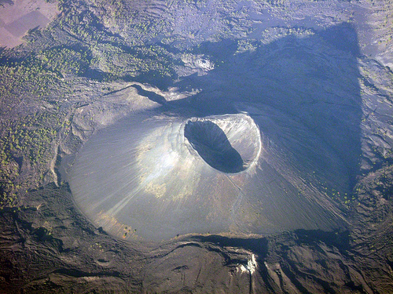

Paricutin Volcano, Mexico. Background: Also known as Parķutin volcano, this natural structure earned its status as one of the seven wonders of the natural world due to the speed at which it formed itself. ... Paricutin volcano is located in Michoacan state, Mexico, where it began to form in 1943.